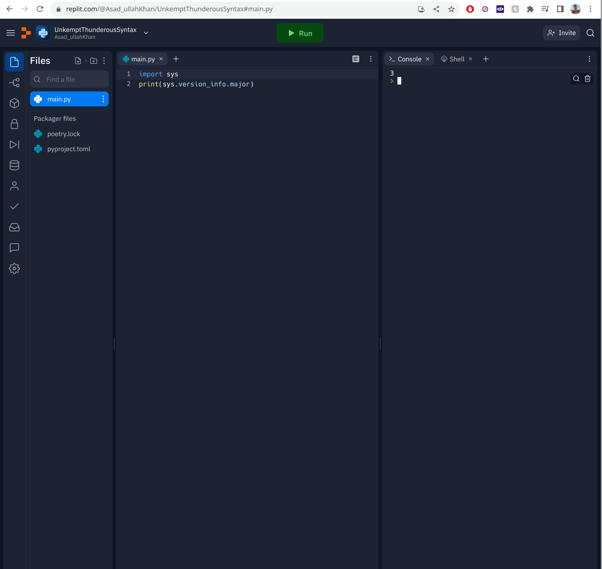

Introduction
Hello, and welcome to a guide I am making for anyone interested in learning programming.
This guide will (eventually) contain pretty much everything I know about programming, and will continue to grow and improve as that knowledge expands
Why make this?
I am making this for a few reasons:
- People ask me all the time "how do I learn programming", or "what are some good resources to learn programming", or "can I learn programming for free". I want to be able to point these people to a resource I trust
- A lot of programming guides and tutorials online are not comprehensive unless they are paid for. Many resources online are great but are usually not up to date and way too language specific
- I feel a lot of despair in the programming community about concepts that quite frankly should not be that difficult to teach, yet are still a pain point for many. This results in people discounting large portions of computer science/software engineering as "useless", and lots of frustration ensues
- A way to keep things I have learned in one place
Basically I want to help people learn with a methodology that I believe in, with a source that I can control and change as I see fit
Why should you read this?
Honestly, I have no justification. I am not an expert at programming; I am pretty good, but there is still much for me to learn. I am also not an expert at teaching, nor do I have any experience in that.
What I do have is a passion for programming, and I was lucky enough to have some good teachers early on, so some of this will contain their knowledge. The rest will come from my experience and what I feel is important to teach, in an order that I think is unique and effective.
Who should read this
- You know how to use a computer to a basic - intermediate degree
- You need to know copy paste, right click, navigate and use the computer
- You don't need to know what a kernel is, how the internet works, or what processor architecture you have currently
- You have an interest in learning programming and want to start now
- You have anywhere from complete ignorance to total and complete knowledge of programming
- Feel free to skip around if you feel the beginning sections are too basic
- You have access to a web browser and an internet connection
- Not a single part of this guide will require a local work environment, with the sole exception of the section on developer environments, which is an important topic which will require some sort of local filesystem (so not really possible on a chromebook for example)
- If you don't access to this
- You have a willingness to work through challenges and difficulty
- Anyone can learn programming, and I don't think it is that difficult to do so. However, writing good software is hard, like really hard. Sure, you can create something that works, but that is very different from a masterfully architected, scalable, and elegant solutions.
- It is very easy to confuse the two: just because you learned something does not mean it will be easy to apply it. I will try my best to give you the tools and knowledge to make this possible, but it will require your effort in the end
- You are willing to trust the process, at least to a certain degree
- I mentioned earlier that the order of this guide is a bit strange compared to most tutorials, but I want you to follow it in order if you are a beginner
Pedagogy
Here I will explain some of the choices that I made with regard to this guide. Feel free to skip this section if you don't care about this; it is not important to read this if you are just trying to learn programming.
Language order
On first glance, the order of languages chosen seems a little bizarre. Python first makes total sense, but C next? Isn't that an "advanced" programming language? Also isn't Java beginner friendly, shouldn't we be learning that first?
Here is my explanation:
- Python: this is a great first language. It has very few pitfalls, is easy to pick up, and can let beginners feel the "joy of programming".
- Another huge advantage is that I can teach a huge part of this language without doing the "you'll learn about this in depth later so just take it at face value for now" thing which I really hate. I will have to do that a few times as it is unavoidable, but Python first really mitigates that
- Python has few pitfalls, but is not completely devoid of them, so there may be slightly better choices, but I am really experienced with Python so it makes sense to me to use it
- C: this is the weird one. The core reasoning behind this is due to what C and Java are supposed to teach
- Here is what I am using each to teach, which is pretty common in general as well:
- C is to help people learn low level concepts and create a core understanding about how a computer works and how languages interact with the computer
- Java is to help understand OOP and software design
- My key takeaway after learning these languages in the opposite order many years ago is this:
the concepts in C are deceptively easy to learn, while the concepts in Java are deceptively difficult to learn
- Computer internals may seem intimidating at first but are really straightforward to understand at a medium-high level and give an excellent baseline to learn other languages that abstract over these concepts
- Software design is very different: it is hard to understand properly, hard to apply, and the best practices are changing rapidly all the time. OOP may seem easy at first to beginners: "just make correlations to real world objects". But this methodology completely falls apart in the real world and results in some really, really bad design that can frustrate newcomers to the field
- Here is what I am using each to teach, which is pretty common in general as well:
- Java: this may also seem strange given its age, but it is still one of the most in demand languages, and is pretty simple when it comes to software design
- Other languages have too many sophisticated features that can clutter understanding
- Learning C first means we don't need to be confused by objects vs primitives and what not
- A kind of underrated language these days: everyone hates on it (I used to as well), but I have come to appreciate its simplicity, even if it is a bit verbose
- The newer APIs in the language are also a big boon
Avoiding the "we'll come back to this later" phenomenon
I mentioned earlier that I really hate this phrase in tutorials: it can be hard as a learner to just ignore the fact that you are using something you can't fully understand. As stated, I can't totally avoid this, but I will try very hard to reduce this phrase as much as possible. Here are the ways I will mitigate this:
- Python first will allow us to get the basics down without much trouble
- I will try to give high level explanations that will allow you to "black box" things effectively
- I will go in depth right at the spot as much as I can without it being too tiresome
Other goals and general ideas
- I want to make this easy to read and not tiresome
- I want to make it approachable and not intimidating
- I want to make it fluid when reading but still work as decently as a reference
- The main focus is straightforward reading, as maintaining a reference is difficult, but I want people to be able to come back to certain sections if there is something they forgot or want to reread
- I do not want people to just memorize things and move on, so I will make that as hard as I can by giving as few things to memorize as possible
- I do not want large code sections, especially not at the beginning
- I want to discourage copy/paste as much as possible
- Also newcomers tend to glaze over when seeing a wall of code
- Hell, I feel my eyes start to glaze over sometimes :)
- I do not want a tutorial "feel" to this guide. Tutorials are kind of bad as they are perpetually out of date and tend to encourage copy/paste as well as lack of understanding
- Instead, I want people to learn and understand core concepts and be able to apply them freely to their own projects
Do's and Dont's
Here I will outline some things to note before we get started
DO make an issue if you see a mistake or can't understand something
Open an issue here (make an account if you don't have one): https://github.com/Kh4n/kh4n.github.io/issues
Please, please do not hesitate to raise an issue if you see a problem or have trouble understanding something. I will address issues quickly because it would be bad to have misinformation in a guide meant for beginners. As for trouble with understanding, that clearly means a problem with my guide, so after I attempt to explain it, I will update the guide to hopefully be more clear in the future.
DO NOT get scared or tell yourself "I can't understand this" when I say something is complicated
Anything worth learning is complicated. At some point in your life, just talking was complicated. Now you can do it almost without thinking. The same will be true of concepts in this guide: they will be challenging at first, but you'll get them soon enough, and when you do they will seem very easy.
DO NOT focus on the "what", focus on the "how" and "why"
This is also a general piece of advice, not just limited to your approach to this guide. The field of software engineering changes extremely rapidly, especially compared to many other fields. It may seem easier at first to just learn the "what" and ignore understanding things at a deeper level, but if you do this you will be chasing the "what" for the rest of your life, and programming will be a chore that you hate.
What do I mean by this? If you try to just memorize concepts and spit them back out, you can get surprisingly far. But it will take you much longer than if you just struggle a bit at the beginning to learn things with understanding, and then apply that understanding to understand "how" and "why" things change the way they do. You will find that many of tools and languages out there have a ton of similarities, and knowing why these exist is key to learning things fast.
This is why experienced programmers find the question "how many languages do you know?" funny: I know many programming languages, more that I can list, even ones I have not touched in years. Why? Because I understand programming, not programming languages, and languages are just a tool. It is not difficult at all to reach this level either: in fact as I mentioned earlier, the sooner you start with this mentality the better and faster you'll learn. You'll surprise yourself with how easy it is to pick up each successive language after you learn the first few.
Compare this to memorizing features and patterns in languages: these will change from language to language, library to library, and every time you want to learn something new you will have to start from scratch. That does not sound fun.
DO take breaks and have fun
There is no need to read this through in one sitting (and then promptly forget its contents). Take breaks, experiment around with the code, take longer on a section you like more, etc. There is no need to be rigid. It is better that you enjoy what you are doing, that way you are more likely to finish it instead of giving up halfway through.
DO NOT overly copy and paste
Unless I explicitly say so, do not copy and paste code. Type it out manually, every time. Trust me. It will improve your coding speed and confidence drastically.
DO NOT learn other languages until you have finished the Python and C sections
There is a reason I chose these languages first, as I believe they are an excellent baseline for learning and understanding a very large number of existing programming languages. If you must learn something else, I implore you to stay far, far away from the languages I am about to list:
- C++: absolutely do not touch this beast. You do not understand it, you will not understand it, and most importantly, you will have the delusion that you do understand it when in reality you don't. This is easily one of the most complex and difficult to master languages ever. Don't let the two pluses confuse you: this is more than just a step up from C, it is truly advanced and deep, and filled with difficult to understand concepts while having little to no safety rails and guards. I myself tried to learn this language early on, and it was a huge mistake. I would stay far away from this until you feel you have mastered Java. I may eventually make a guide, but I am not confident with it, which is really saying something as I have been using it longer than C
- Rust: this is a great language, one of my favorites. But if you try to learn this before understanding what a language memory model is, and why resource allocation is hard, you will suffer. None of the concepts will make sense, and you will want to murder the compiler. Which would be a damn shame, because the Rust compiler might actually be the most user friendly and insanely good compilers of all time, but you really won't be able to appreciate it before learning C
- JavaScript: this might come as a surprise, as a lot of people say it is good for beginners, even going as far as recommending it. I sincerely believe that this is one of the worst languages ever created, especially if you consider how much it is used. It is filled with pitfalls, is not easy to set up in practice, and is all around frustrating for beginners. Stay away. If you must, learn TypeScript instead (everyone uses that these days anyway). Stick to Python for your day to day needs
- PHP: just...don't. Trust me. You sincerely have no use for this language at this point
- Any super old language (Cobol, Fortran, etc.): it is not worth your time at this point. Stick to the basics, you can always come back to these
- Haskell: this is a language that is very cool and also important to learn to a certain level, but again: not right now. Learn the basics, then come back and understand what a monad is and how you have actually been using it forever without actually knowing what it was called :)
DO NOT get frustrated if you learn one thing easily, but the next thing is hard
Different people learn things at different rates. You may excel at design and debugging, but suck at data structures and algorithms. There is nothing wrong with that; you are not a worse programmer because of it. Just make sure you understand both, and when you are actually on the job or working on a project you will have people you can rely on that are better at things you are not so good at. This is why we work on teams.
It is still important to know all aspects of programming, mainly because if you skip things you will never know when something you are working on is actually more complicated than you are treating it, or that you are making a design mistake that is gonna bite you months down the road, and bite you hard.
Just don't let it impact your confidence :). You can learn programming.
Basics
Here we will learn the basics of Python as well as programming in general. What is a keyword? What is a function? What is a variable? Things like that. Read on to get started.
Hello World
Ah, the pinnacle of programming. Every programmer starts with a "hello world" program, as will you. Let's get started.
Setup
Here I will be making a shift: many tutorials start with an agonizing development environment setup that can suck the joy out of many a beginner (or even experienced) programmer. Instead, we will be using the glory of an Online IDE. Fear not, it will have all the features you need, will be fully setup, and can be accessed from anywhere you have a browser.
You are free to use any online IDE, but I strongly recommend Replit, as it is free and easy to use. Sign up, create a new Repl, make sure to select Python. It should be Python version 3. You will see a code editor on the left. Here is what mine looks like (it may look different): 
You see I have some code in the left side:
import sys
print(sys.version_info.major)
Paste this in to whatever IDE or editor you are using, Replit or otherwise, and ensure that after you run (the green "Run" button in the case of Replit) the console on the right outputs a "3". This is to make sure we are on Python 3, and not 2. If you get an error, you are on the wrong version.
Ignore the other files that are there, and do not open them or edit them. They are not relevant.
IMPORTANT: As a note to yourself for the distant future: do not ever write proprietary code in an online IDE, or any code that you want to own yourself. It is not safe from a legal or security standpoint, please do not do it. I will show you how to properly set up your environment locally later on, and it is not even that hard. It's just that right now I want to get you started as quickly as possible, and this is the best way to do that. The code you will write as a beginner will not be so important tha you need to copyright it, but in the future it may be.
Now that you are on the right version, delete that code and pretend that you never ran it, because now we will write our first legitimate piece of software.
The actual code
In the editor, type:
print("Hello World!")
and hit run. You should see the words printed on the right. This output area is known as the console. Later on we will discuss what is going on in more depth, as even a simple hello world program has much to be explained. Suffice it to say, the console is where you will see your program output, as it is (usually) very easy to output text to it in most languages, Python included. In fact, in Python it is only one line as you can see here.
What just happened?
So what is going on here? A couple of things: we wrote print, which is known as a function, one of the first and most important concepts to understand in programming. The part in quotes is